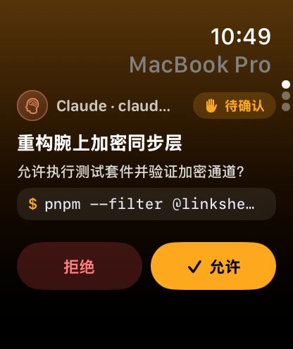
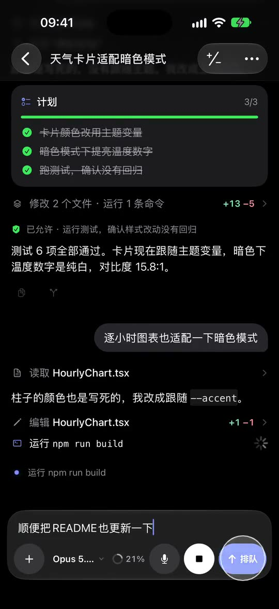

08:50 · 出门
它在电脑上干活，你在手机上看着。
回复逐字出现；它读了什么、改了什么、跑了什么命令，实时更新，每个文件的改动都能看 diff。要权限、要你做选择的时候，请求推到手机上，点一下就行。

Claude Code、Codex 这些编程 Agent 留在电脑上跑；你在手机、手表或锁屏上看它干活、点一下批准、随时插话。另一台 Mac 的应用，也能直接开在手边这台上。
npm test
这就是手机上收到的请求。点一下试试。

你不用一直守在电脑前。这是离开它的一天。
08:50 · 出门
回复逐字出现；它读了什么、改了什么、跑了什么命令，实时更新，每个文件的改动都能看 diff。要权限、要你做选择的时候，请求推到手机上，点一下就行。
09:20 · 地铁上
实时活动把 Agent 的进度放在锁屏和灵动岛上；它要权限时，卡片上直接有「拒绝」和「允许」。Apple Watch 上也能看会话、回请求、发一句短消息。
实时活动需要 iOS 16.2 及以上，卡片上的按钮需要 iOS 17；手表 App 需要 watchOS 10 及以上。


12:40 · 午饭
忙的时候发的消息先排队：可以调整顺序、取回重写，或者立即发送，直接插进 Codex 和 Claude 当前这一轮。电脑上正在跑的那一轮，手机上也能停。
会话在哪儿开的都行：终端里的 linkshell claude、linkshell codex，普通的 claude、codex，或者它们的桌面 App。

15:10 · 会议间隙
Agent 改完了，就在手机上打开真实的桌面：看看网页、动一下编辑器、点掉一个弹窗。横过来全屏，双指放大；触控板和直接点按随手切换，长文字和剪贴板也能发过去。
画面最宽 3840 像素，iOS 最高 120 Hz，实际效果随设备和网络变化。完整控制需要 macOS 13 及以上。

16:30 · 还在开会
在手机上让 Codex 操作电脑上的浏览器和桌面应用，它的操作画面在会话上方的小窗里实时显示。边看边聊，小窗可以拖开、放大或收起。目前支持 macOS 上的 Codex，看看怎么用。

18:30 · 回家路上
展开时，对话和改动或预览并排放；折叠时，界面按可用区域重新安排，会话不中断。普通 iPhone 用单栏，操作一样。
换个角度看看

点选姿态，拖动模型自由旋转
21:30 · 客厅
融合模式把另一台 Mac 的应用一个个接过来：它们出现在这台 Mac 的程序坞和 ⌘Tab 里，图标右下角标着来自哪台电脑，各开各的窗口，和本机应用放在一起用。
暗色模式下的天气卡片
两台 Mac 都要装 LinkShell 桌面版（macOS 13 及以上），被连的那台打开屏幕录制和辅助功能。能直连就直连，否则走端到端加密隧道。声音、拖放和通知还不支持。使用说明
localhost:3000 直接在手机里打开，热更新照常工作，不用暴露端口，也不用同一个 Wi-Fi。/side、Claude 和 Grok 的 /btw，问答不进入会话。/ 列出 Agent 的命令和你的 skills。/compact、/review 对 Codex 同样可用。claude --resume 里也能看到新名字。CodexClaude CodeGemini CLIGitHub CopilotOpenCodeCursorGrok和任何命令行工具
Codex用 linkshell codex 打开的终端和手机同时在线，哪一端都能发消息、打断、审批。
Claude Code电脑上用它自己的界面（linkshell claude），手机一发消息就接管，电脑上按任意键收回。
其余 Agent通过 Agent Client Protocol 新建、继续会话，实时输出、审批、切换模式和模型。LinkShell 不经手任何 Agent 的账号和密钥。
Mac 和 Windows 下载桌面版；Linux 或者更喜欢命令行，就装 CLI（需要 Node.js 22.13 或更新）。
桌面版自带 CLI、Host 和 Node，一起更新。Mac 需要 macOS 13 及以上，打开后在设置里开屏幕录制和辅助功能。
Mac · Apple siliconMac · IntelWindows
$ npm i -g linkshell-cli
$ linkshell setup官方网关：电脑和 App 登录同一个账号，电脑自动出现；新账号免费试用 7 天，不用绑卡。自建网关：配对一次，扫码即可。
$ linkshell login
# 或者自建网关
$ linkshell host --gateway wss://gw.you
$ linkshell pair你的手机密文网关密文你的电脑
网关只转发密文官方网关和自建网关都看不到你的代码和对话。配对一次，长期有效。
官方或自建新账号免费试用官方网关 7 天，之后是 iTool 会员；也可以用一条命令或 Docker 自建，完全免费。
屏幕和预览走直连能直连时点对点传输，网关只负责牵线；打不通时经官方 TURN 中继，仍是端到端加密。
会话、上下文和历史都留在电脑上，按任意键就接回来。全部功能免费：新账号可以免费试用官方网关 7 天，也可以一条命令自建网关。